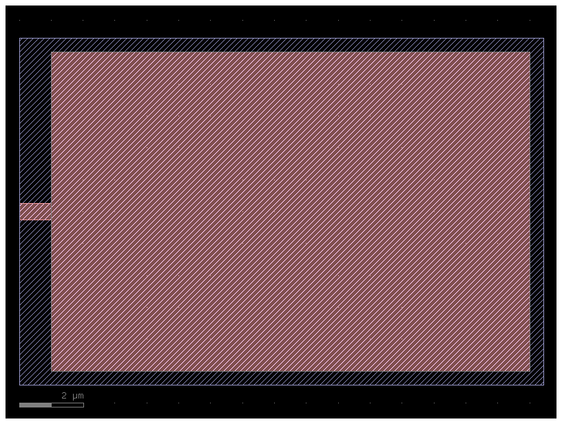
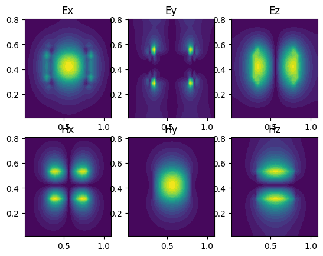
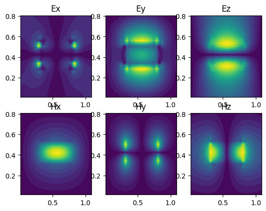

Inverse design of perfectly vertical photonic (meta)grating coupler#
Geometry#
import math
import json
import os
import matplotlib.pyplot as plt
import luminescent as lumi
import gdsfactory as gf
from gdsfactory.technology import LogicalLayer, LayerLevel, LayerStack
import numpy as np
from IPython.display import Image, display
path = os.path.join("runs", "metagrating_coupler")
wl = 1.55 # um
bw = 0.02
wavelengths = [wl - bw / 2, wl, wl + bw / 2] # um
materials_library = lumi.MATERIALS_LIBRARY
materials_library["background"] = materials_library["SiO2"] # set background material
nSi = math.sqrt(materials_library["Si"]["epsilon"])
nox = math.sqrt(materials_library["SiO2"]["epsilon"])
w = 0.5 # gaussian beam waist
R = 1.0 * w # source radius
width = 10 # of design region
length = 1.5 * width # of design region
w_wg = 0.5
l_wg = 2 * w_wg
dz = 0.1
# margins
lateral_port_margin = height_port_margin = 0.3
xmargin = 1.5 * lateral_port_margin
zmargin = 1.5 * height_port_margin
box_thickness = 0.5
source_port_margin = 1.5 * dz
WG = 1, 0
TEETH = 2, 0
BBOX = 4, 0
DESIGN = 100, 0
# makes gdsfadory component to be optimized. has rectangular design region with port stubs. ports numbered clockwise from bottom left.
c = gf.Component()
dut = c << lumi.mimo(
length,
width,
w_wg=w_wg,
l_wg=l_wg,
west=1,
layer_wg=WG,
layer_design=DESIGN,
init=1,
)
xoffset = -(length - width + width / 2)
yoffset = -(width / 2)
dut.movex(xoffset)
dut.movey(yoffset)
c.add_port("o2", port=dut.ports["o1"])
c << gf.components.bbox(
component=c, layer=BBOX, top=xmargin, bottom=xmargin, right=xmargin
)
c.plot()

Solve#
# layer stack. lower mesh order layers override higher mesh order layers. for 2.5D problems as is here, the mesher will slice thru middle of 'core' layer
thickness_teeth = 0.07
thickness_slab = 0.15
thickness = thickness_teeth + thickness_slab
layer_stack = LayerStack(
layers={
"design": LayerLevel(
layer=LogicalLayer(layer=DESIGN),
zmin=thickness_slab,
thickness=thickness_teeth,
material="design",
mesh_order=0,
),
"teeth": LayerLevel(
layer=LogicalLayer(layer=TEETH),
zmin=thickness_slab,
thickness=thickness_teeth,
material="Si",
mesh_order=1,
),
"core": LayerLevel(
layer=LogicalLayer(layer=WG),
zmin=0,
thickness=thickness,
material="Si",
mesh_order=3,
),
}
)
# make fiber mode
nx = 2 * round(R / 0.05)
_dx = 2 * R / nx
x = np.linspace(-R + _dx / 2, R - _dx / 2, nx)
y = np.linspace(-R + _dx / 2, R - _dx / 2, nx)
X, Y = np.meshgrid(x, y)
g = np.exp(-(X**2 + Y**2) / (2 * w**2))
modes = [
lumi.Mode(ports=["o1"], fields={"Ey": g, "Hx": -nox * g}, dx=_dx),
lumi.Mode(ports=["o2"]),
]
# additional ports not attached to gdsfactory component
ports = [
lumi.PlanePort(
name="o1",
origin=[0, 0, thickness + dz],
frame=[[1, 0, 0], [0, 1, 0], [0, 0, 1]],
length=2 * R,
width=2 * R,
)
]
sources = [
lumi.Source(
"o1",
source_port_margin=source_port_margin,
)
]
# optimization targets of T params. o1@0 means optical port 1 on mode 0 (fundamental mode)
targets = [
lumi.Target("To2@0,o1@0", 1.0, weight=1 / len(wavelengths), wavelength=x)
for x in wavelengths
]
Tsim = (
1.0
* (length + width / 2 + 2 * box_thickness + zmargin + 2 * thickness + l_wg)
/ wl
* nSi
+ 5
) # max time [periods]
designs = [
lumi.Design(
"d1",
layer=DESIGN,
lmin=0.2,
fill_material="Si",
void_material="SiO2",
symmetries=["y"],
uniform_along="z",
)
]
optimizer = lumi.Optimizer(
stoploss=0.2,
area_change=0.03, # area change initial target
iters=20, # max iters
)
lumi.make(
#
path=path, # path to make problem folder
component=c,
wavelengths=wavelengths,
ports=ports,
modes=modes,
sources=sources,
boundaries=["PML", "PML", ["PEC", "PML"]],
#
materials_library=materials_library,
layer_stack=layer_stack,
#
lateral_port_margin=lateral_port_margin,
height_port_margin=height_port_margin,
zmin=-box_thickness, # zmin of simulation region
zmax=thickness + zmargin, # zmax of simulation region
#
gpu="CUDA",
relative_courant=0.9,
nres=4, # number of grid points per wavelength in material (not vacuum)
Tsim=Tsim, # total simulation time in periods
relative_pml_depths=[[1, 0.3], 0.3, 1], # relative PML thicknesses in x, y, z
#
saveat=10, # save frame every `saveat` periods for movie
force=True, # delete and overwrite existing path
#
show_field="Ey",
show_grid=False,
field_slices=[0, 0, thickness_teeth / 2 + thickness_slab],
geometry_slices=[0, 0, thickness_teeth / 2 + thickness_slab],
# inverse design parameters
targets=targets,
designs=designs,
optimizer=optimizer,
)
# runs adjoint optimization.
lumi.solve(path)
display(Image(filename=os.path.join(path, "peak.gif")))


using simulation folder c:\Users\default.LAPTOP-HMRU58MH\Desktop\lumi\luminescent\runs\metagrating_coupler
c:\Users\default.LAPTOP-HMRU58MH\Desktop\lumi\luminescent\luminescent\sparams.py:127: UserWarning: Layer (200, 0) not found in component 'Unnamed_20' layers. [(1, 0), (4, 0), (100, 0)]
bbox = component.extract([layer]).bbox_np().tolist()
0